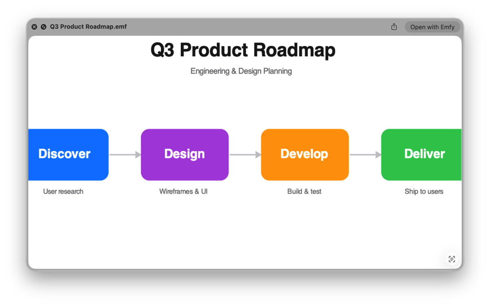
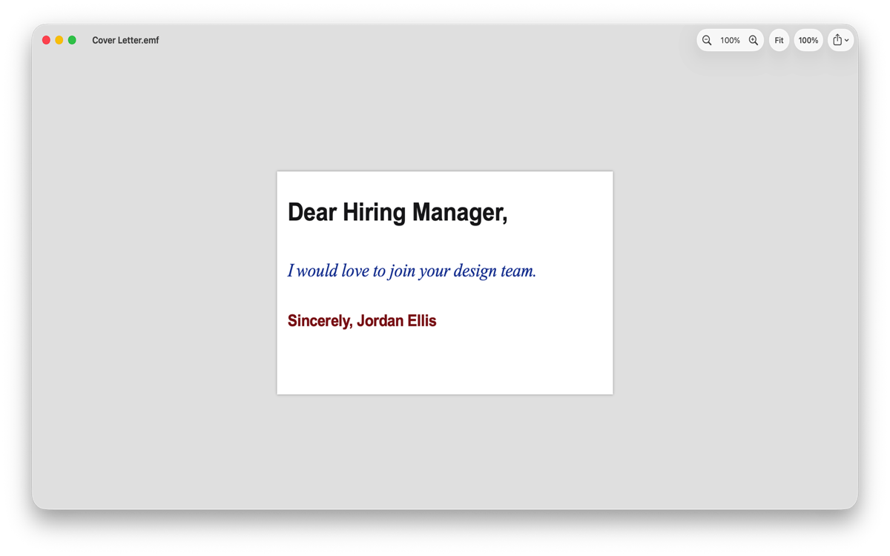
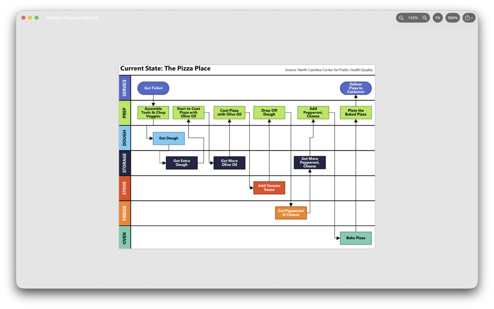

EMF in. Picture out.
PowerPoint, Visio, Excel, and engineering tools quietly export
.emf — a vector format your Mac refuses to open. Emfy is the
missing adapter: press space in Finder and the picture is just there.
Free, open source, and it never touches the network.
Quick start
INSTALLATION PROCEDUREDownload Emfy.dmg from the latest release and open it.
Drag Emfy to Applications and launch it once.
Press space on any .emf in Finder. Thumbnails appear on their own.
The app is notarized by Apple, so it opens without Gatekeeper warnings — no security overrides needed. Quick Look previews and Finder thumbnails stay active from the first launch on. Prefer the store? The same app is on the Mac App Store, where updates install automatically.
Signal path
FUNCTION REFERENCE| Pin | Function | Description |
|---|---|---|
| QL-1 | Quick Look preview | Spacebar previews straight in Finder — which macOS itself doesn't offer for EMF. |
| TH-2 | Finder thumbnails | Real rendered thumbnails for every .emf file, not a generic icon. |
| VW-3 | Viewer | Zoom, pan, fit-to-window, and Render Details — a readable log of anything a file made the parser skip or approximate. |
| EX-4 | Export | PNG raster or true-vector PDF, sized from the file's own physical frame. |
| RC-5 | Record coverage | Vector shapes, path brackets, clipping, dashed and styled pens, brushes, transforms, text with Windows→macOS font mapping (rotated and accented runs included), embedded bitmaps. |
| CR-6 | Clean-room parser | Implemented from the public [MS-EMF]/[MS-WMF] specifications only — no code from or derived from any existing EMF implementation. |
NOTE 1Modern exporters often write dual-format files (GDI and EMF+ side by side) — these render fully from their GDI half. Files whose drawing content exists only as EMF+ render partially and say so in the viewer. EMF+ decoding is on the v2 list.
NOTE 2Quick Look parses files the moment Finder shows them, so every size and count is bounds-checked before it is trusted, unknown records are logged and skipped (a partial render always beats an error), and the parser is fuzz-tested against thousands of mutated files.
Output reference
MEASURED ON MACOS 26
.EMF FILES

Compliance
TRUST, VERIFIABLENotarized
Every release is notarized and stapled; Gatekeeper reports “Notarized Developer ID.”
Sandboxed
App and both extensions run sandboxed, built with no network entitlement — connections are impossible.
Open source
MIT-licensed, public repository. Read every line before you trust it with a file.
No tracking
No analytics, no accounts, no telemetry. The whole privacy policy fits on one sheet.
Revision history
CHANGELOG| Rev | Date | Changes |
|---|---|---|
| 1.3 | AUG 2026 |
|
| 1.2 | JUL 2026 |
|
| 1.1 | JUL 2026 |
|
| 1.0 | JUL 2026 |
|
Building from source
XCODE 26+ · SWIFT 6.2The EMFKit package — parser, renderer, and the emfy-dump debugging CLI:
cd EMFKit swift test # fixtures, snapshots, fuzz swift build -c release .build/release/emfy-dump path/to/file.emf # record inventory + diagnostics
The app and both Quick Look extensions:
xcodebuild -project Emfy/Emfy.xcodeproj -scheme Emfy -configuration Debug build
corpus/ holds the self-generated test files the suite depends on.
scripts/release.sh is the notarized-release pipeline — point it at your own
signing identity if you ship a fork.
Contributing
FIELD REPORTS WELCOMEThe most valuable contribution is a real .emf file that renders wrongly —
every confirmed one becomes a test case for the next release. See
CONTRIBUTING.md
for the file-licensing ground rules, the clean-room policy, and code expectations.